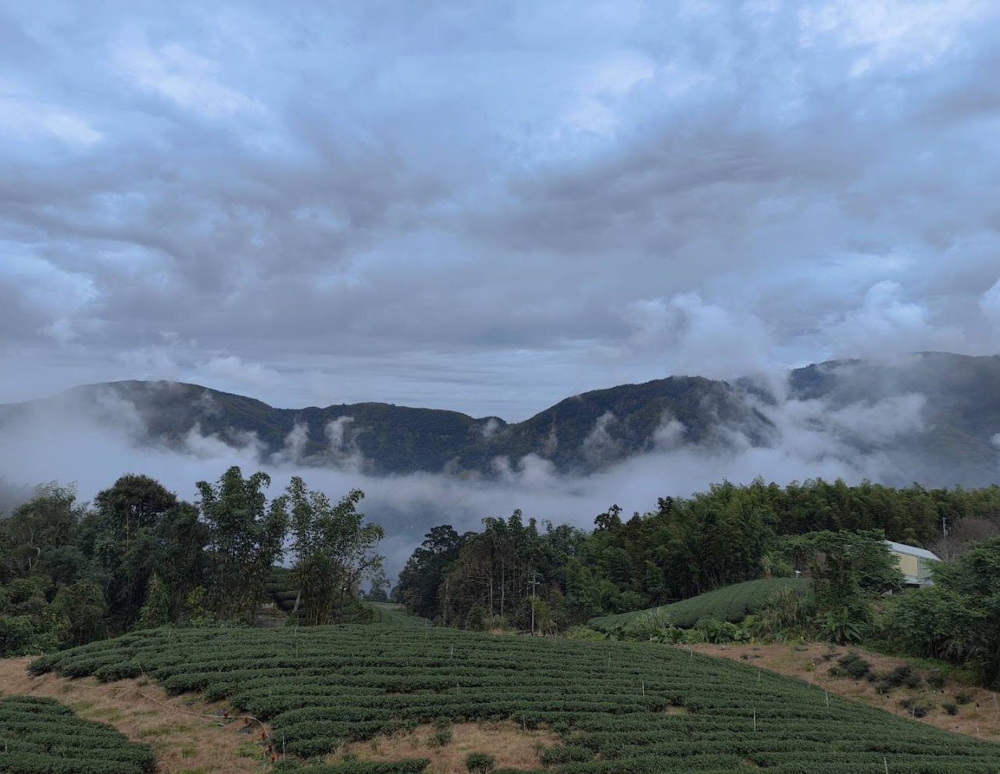
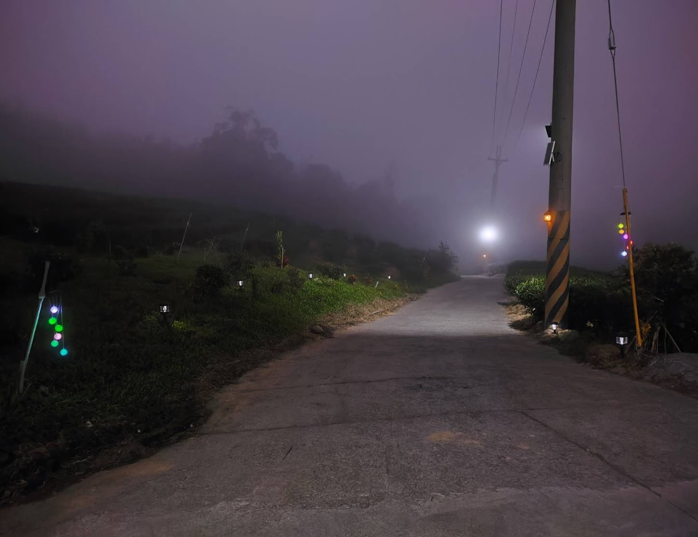
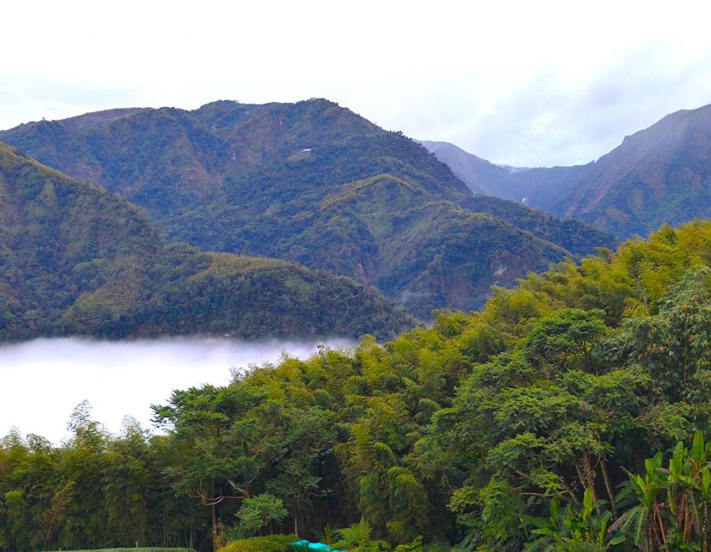
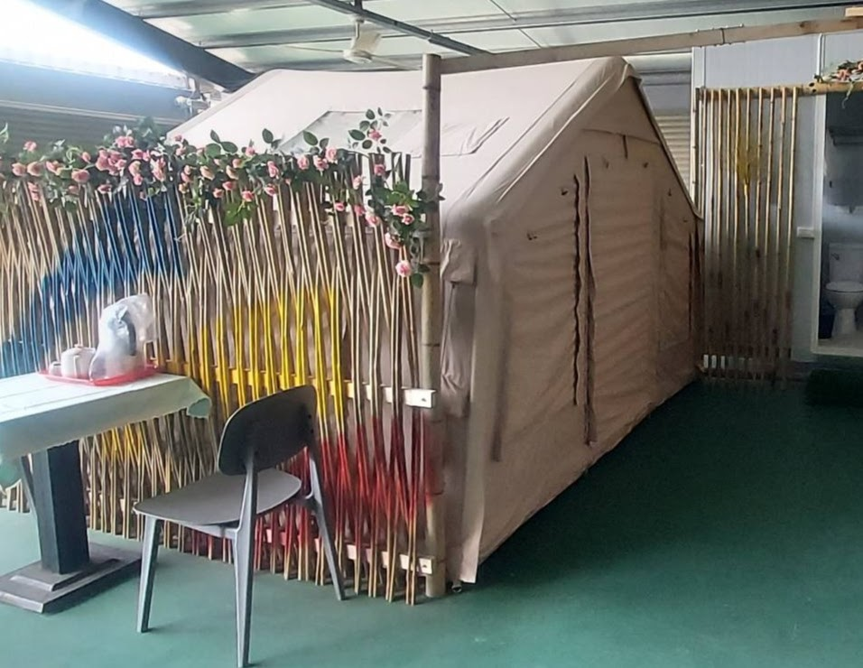
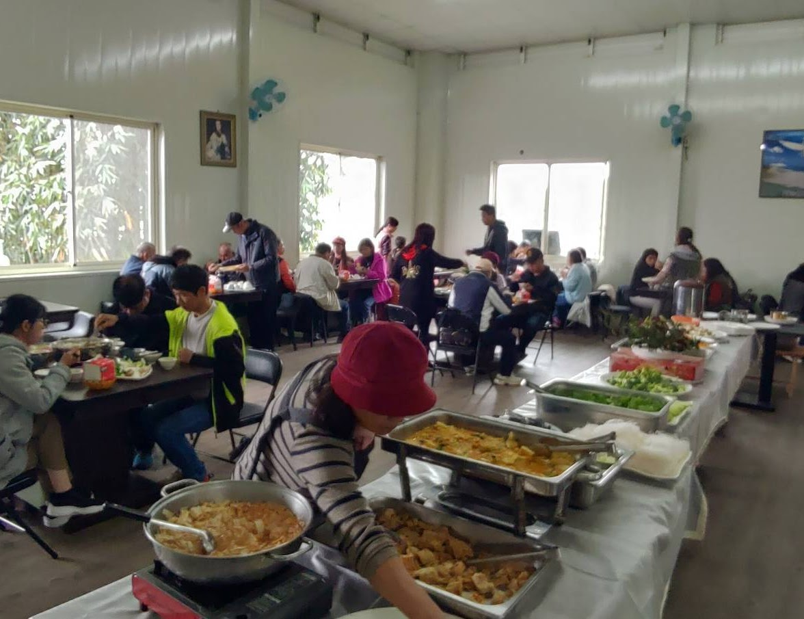
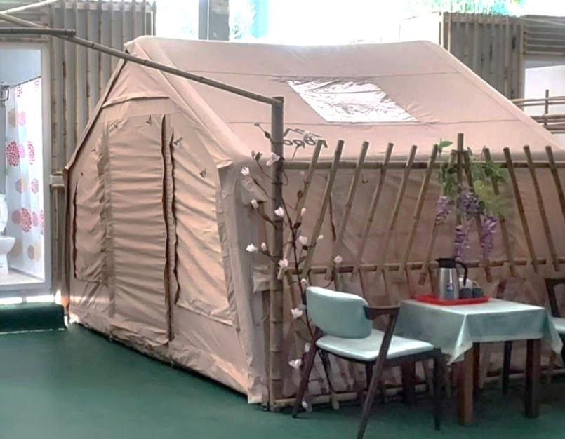
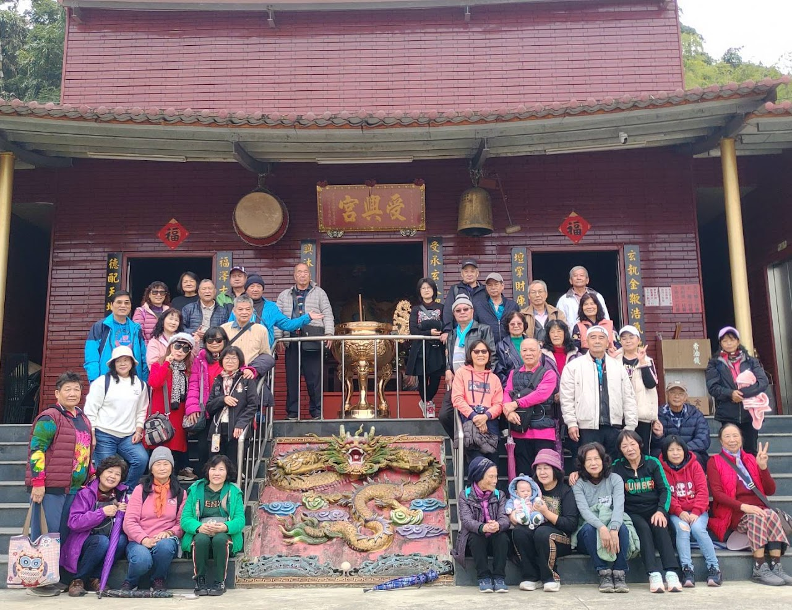
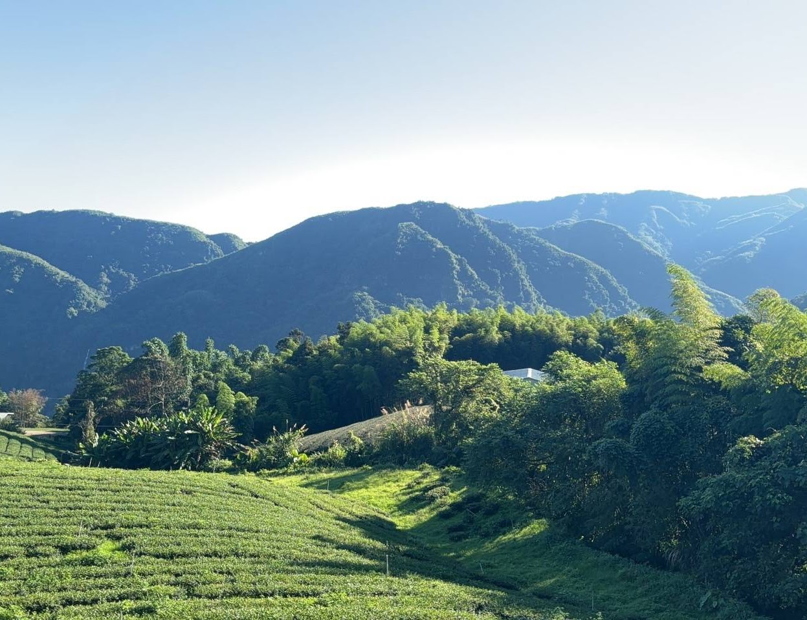
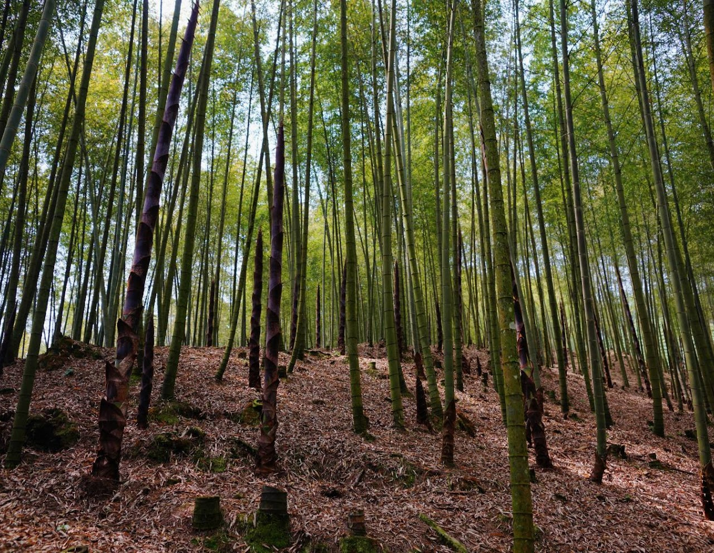

【仙境茶業觀光農場】隸屬於龍之嶺旅遊集團，座落於南投縣竹山鎮群山環抱之地，以純淨自然的環境與悠久細緻的製茶工藝，邀請旅人踏上一場融合文化、美學與生態的感官之旅。農場佔地遼闊，茶園層層疊翠，晨霧與陽光交織出如夢似幻的景致，宛若步入人間仙境。
在這片充滿生命力的土地上，遊客不僅可以深入了解茶葉背後的自然智慧與匠心精神，還能選擇入住舒適帳篷，徹夜感受山林間的微風、星辰與茶香，與自然無界共眠，體驗獨特的慢活之美。農場亦設有品茗體驗空間與茶香料理，讓味覺、嗅覺與心靈在寧靜中綻放。
照片錦集









影片觀賞
聯絡我們
茶廠
南投縣竹山鎮大鞍里頂城巷13號
公司
台中市南屯區五權西路二段666號15樓之二
業務電話
(04)3700-4998、(04)3704-0111
0923-140108